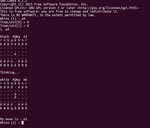
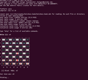

Engines
Dieser Artikel wurde für die folgenden Ubuntu-Versionen getestet:
Ubuntu 16.04 Xenial Xerus
Zum Verständnis dieses Artikels sind folgende Seiten hilfreich:
Unter Schach-Engines oder meist kurz Engines versteht man Programme, die Schach spielen können. In der Literatur werden Engines manchmal auch Motoren genannt. Dabei bezeichnet Engine ausdrücklich nur den Programmteil, der tatsächlich "spielt", d. h., technisch gesehen, die besten Züge berechnet. In der Praxis werden Engines heute fast ausschliesslich mit grafischen Oberflächen verwendet, wobei es eine beträchtliche Zahl solcher Oberflächen gibt. Es gibt gerade auch unter Linux etliche Kombinationsmöglichkeiten für die Integration von Engines in Oberflächen; es gibt auch Programme, die mehr für die Analyse von Partien als fürs Spielen gedacht sind. In etlichen Programmen können sogar Engines gegen Engines spielen, und zwar ggf. sowohl dieselbe Engine gegen sich selber, als auch verschiedene Engines gegeneinander. Dem Einsatz sind kaum Grenzen gesetzt. Mit dem Einsatz von Engines können, falls das fragliche Programm dies ermöglicht, auch bestimmte Stellungen "ausgespielt" werden, usw.
Es ist allerdings durchaus möglich, mit bzw. gegen gewisse Engines zu spielen, ohne eine Oberfläche zu verwenden. Das geschieht, indem der Startbefehl der Engine (also etwa crafty für Crafty) ins Terminal eingeben wird, wodurch die Engine wie ein Programm, das sie ja auch ist, startet. Viele Engines haben (z. T. sogar sehr ausdifferenzierte) Terminaloptionen für diesen Einsatz. Insgesamt ist die Verwendung von Engines "nur" im Terminal aber heutzutage für "normale" Anwender und Schachspieler eher ausgefallen. Im Kurzbeschrieb der Engines unten werden allfällige Besonderheiten des Terminalbetriebs erwähnt. Es gibt aber auch Engines, die nicht im Terminal betrieben werden können; das gilt bei den hier vorgestellten, in den Paketquellen vorhandenen Engines für jene, die (auch oder nur) das UCI-Protokoll beherrschen.
Engines aus den Paketquellen¶
In den Ubuntu-Quellen sind folgende Engines enthalten:
gnuchess (universe)
crafty (multiverse)
phalanx (universe)
sjeng (universe)
hoichess (universe)
fruit (universe)
toga2 (universe)
glaurung (universe)
stockfish (universe )
 mit apturl
mit apturl
Paketliste zum Kopieren:
sudo apt-get install gnuchess crafty phalanx sjeng hoichess fruit toga2 glaurung stockfish
sudo aptitude install gnuchess crafty phalanx sjeng hoichess fruit toga2 glaurung stockfish
Sie lassen sich über die Paketverwaltung installieren [1]. Es ist eigentlich nicht nötig, mehrere Engines zu installieren. Jede Engine hat aber natürlich ihre kleinen Stärken und Schwächen, so dass es durchaus Sinn macht, sich durch Installation mehrerer Engines eine kleine Auswahl zu ermöglichen. Die Engines haben in der höchsten Spielstufe ELO-Stärken von deutlich über 2000 (abhängig vom Prozessor), so dass auch starke Vereinsspieler gefordert werden. Andererseits lassen sich selbstverständlich auch einfache Spielstufen wählen.
Kurzbeschrieb der Engines¶

GNU Chess¶
GNU Chess (das Paket zur Installation heisst aber gnuchess) ist ein sehr altes Schachprogramm, das schon unter Unix lief. Es gehört nicht zu den absolut spielstärksten, doch haben Laienspieler bei einer ungefähren Stärke von 2500 ELO absolut keine Chance gegen das Programm. Eine hübsche Besonderheit des Betriebs im Terminal (ohne Oberfläche) sei erwähnt: GNU Chess bildet nämlich (im Terminal) nach jedem Zug ein Schachbrett ab (alles in Englisch, auch die Figurenbezeichnungen), weshalb der Terminalbetrieb durchaus eine lustige oder nostalgische Alternative sein kann. Der Startbefehl ist gnuchess. GNU Chess war immer quelloffen und gehört zu den ältesten GNU-Projekten.
Crafty¶
Crafty gehört zu den ältesten Schachprogrammen. Wenn das Vorgängerprogramm Cray Blitz mitgezählt wird, geht seine Geschichte bis in die 1960er (!) Jahre zurück. Crafty ist ein starkes Programm mit einer ELO-Stärke von über 2600. Bei manchen kommerziellen Schachprogrammen kann Crafty als zusätzliche Engine zugeschaltet werden, um alternative Lösungen zu untersuchen. Crafty gehört generell zu den häufigsten per Default zugeschalteten Engines.
Technisch ist Crafty auch aus historischen Gründen ein sehr komplexes Stück Software. Es ist zwar der ganze Quellcode zugänglich, jedoch stehen nicht alle Teile unter derselben Lizenz, so dass sich Einschränkungen z. B. bezüglich Weitergabe von Änderungen ergeben. Einige Teile sind in sehr altertümlichen Programmiersprachen geschrieben (Assembler, Fortran 77). Für Interessierte stehen eine ganze Reihe ausgefeilter Optionen zur Verfügung (siehe dazu diese Dokumentation). Im Terminalbetrieb (Startbefehl crafty) zeigt Crafty per Default die durchanalysierten Zugfolgen an, bevor das Programm zieht.
Phalanx¶
Phalanx ist mit einer Spielstärke von etwa 2200 ELO an sich aus heutiger Sicht ein etwas "schwächeres" Programm. Man muss sich aber bewusst sein, dass das Programm dennoch nahezu alle Laien- und eine beträchtliche Zahl der Vereinsspieler schlägt. Phalanx wurde Ende der 1990er Jahre entwickelt und ist eine der etwas seltener verwendeten Engines. Der Terminalbefehl ist phalanx. Der Code steht vollständig unter der GPL.
Sjeng¶
Sjeng ist mit einer Spielstärke von gegen 2700 ELO einer der stärksten Open-Source-Engines. Die Engine wurde 2000 entwickelt. Eine Besonderheit ist die Fähigkeit, auch etliche Schachvarianten spielen zu können, darunter Crazyhouse und (mit Serveranbindung) die Teamvariante Bughouse. Bis 2008 gab es einen kommerziellen Ableger namens Deep Sjeng, dessen Quellcode nicht Opensource war. Der Startbefehl ist sjeng. Eine Besonderheit betrifft die Zugseingabe bei der Verwendung im Terminal: sjeng verlangt genau die Angabe des Startfeldes und des Zielfeldes ohne Leerzeichen oder anderes Zwischenzeichen und ohne Angabe der Figurenart, als etwa 1. g1f3 für einen Eröffnungszug mit dem Königsspringer. Üblich ist sonst bei allen Programmen (und in der ganzen Schachliteratur) nur die Angabe des Zielfeldes, jedoch (ausser bei Bauern) der Figurenart (fast immer mit der englischen Abkürzung), also hier 1. Nf3.

HoiChess¶
HoiChess ist mit einer Spielstärke um 1800 bis 1900 ELO erheblich schwächer als die stärksten heutigen Schachprogramme und Engines. Dennoch liegt schon diese Spielstärke am obersten Rand von Laienspielern. Deshalb kann die Engine eine interessante Alternative sein, wenn man nicht entweder die Engine künstlich drosseln will oder aber jede Partie gegen die Engine "haushoch" verlieren will. Eine Besonderheit hat der Gebrauch von HoiChess im Terminal (Startbefehl ist hoichess): Wie bei GNU Chess erscheinen nicht nur die Züge, sondern ein ganzen Schachbrett in der Konsole. Die Darstellung ist jedoch erheblich aufwändiger und insofern "moderner" als in GNU Chess (u. a. farbig, wenn die Terminaleinstellungen das zulassen). HoiChess wurde um 2000 entwickelt. Es existiert eine ebenfalls quelloffene Variante namens HoiXiangqi, mit der Xiangqi, die chinesische Variante von Schach, gespielt werden kann.
Fruit¶
Fruit wurde 2004 programmiert und ist damit eine neuere Engine. Mit einer Spielstärke von um die 2800 ELO ist Fruit äusserst stark (im Bereich der stärksten menschlichen Spieler). Die Entwicklungsgeschichte von Fruit ist etwas konfus, weil der Entwickler schon 2007 die Entwicklung der Opensourceversion einstellte (der Code der älteren Versionen ist aber natürlich weiterhin zugänglich) und vorübergehend eine kommerzielle Version entwickelte. In der Folge entstanden mehrere Derivate, die aus der letzten Opensourceversion entwickelt wurden, darunter auch Toga II. Zu einer wüsten Kontroverse kam es um die Engine Rybka, da nachträglich "aufflog", dass Teile ihres Quellcodes aus Fruit stammten, was der Rybka-Entwickler aber nicht offengelegt hatte. Eine Besonderheit bzw. Einschränkung von Fruit ist, dass die Engine nur unter dem UCI-Protokoll läuft, was die Wahl der möglichen grafischen Oberflächen erheblich einschränkt. Fruit kann nicht im Terminal betrieben werden.
Toga II¶
Toga II (das Paket heisst toga2) gehört zu den stärksten Schach-Engines. Toga II ist ein Fork einer bestimmten Version der Engine Fruit und ist mindestens so stark wie diese. Toga II hält mit kommerziellen Schachprogrammen mit und ist selbst von den besten menschlichen Spielern kaum zu schlagen. Eine Besonderheit von Toga II ist, dass die Engine sowohl unter dem xboard-Protokoll als auch unter dem UCI-Protokoll läuft. Im Terminal kann Toga II nicht betrieben werden.
Glaurung¶
Glaurung ist ein Fork einer alten Version des Programms Stockfish von 2004. Das Programm ist seit Dezember 2008 nicht mehr weiterentwickelt worden und deshalb heute eher von historischem Interesse, obwohl es durchaus zu den starken Engines gehört. Glaurung läuft wie Stockfish nur unter dem UCI-Protokoll. Im Terminal kann Glaurung nicht betrieben werden.
Stockfish¶
Stockfish ist derzeit vermutlich die stärkste quelloffene Schach-Engine. Selbst sehr starke menschliche Spieler (Grossmeister) sind gegen das Programm chancenlos; sein ELO dürfte über 3000 sein. Es führt die meisten Ranglisten der "freien" Engines an. Stockfish hat eine ungewöhnlich grosse und aktive Entwicklercommunity hinter sich. Dies zeigt sich auch daran, dass es auf sehr vielen Betriebssystemen und Plattformen läuft (neben GNU-Linux auch Windows, OSX, iOS, Android und sogar auf gewissen kommerziellen E-Book-Readern). Neben Glaurung und Fruit ist Stockfish die einzige Engine, die nur unter dem UCI-Protokoll läuft, was die Wahl der möglichen grafischen Oberflächen erheblich einschränkt und der einzige wesentliche Nachteil der Engine ist. Im Terminal kann Stockfish nicht betrieben werden.
Eröffnungsbibliotheken zu Engines¶
Grundsätzliches¶
Eine Eröffnungsbibliothek ist eine Datensammlung, die Informationen über jene Schacheröffnungen enthält, die bereits über (ggf. viele) Züge "ausanalysiert" sind, bei denen also feststeht, welcher Zug der beste ist. Aufgrund der jahrhundertelangen Erforschung des Schachspiels trifft das heute auf eine sehr grosse Zahl von Eröffnungen zu; einige besonders populäre Eröffnungen sind über viele (bis über 20!) Züge ausanalysiert. Wenn eine Engine eine (oder mehrere) Eröffnungsbibliotheken benutzen kann, bedeutet das, dass sie die Züge nicht berechnen (sondern nur nennen) muss, solange die Partie sich innerhalb solcher ausanalysierter Eröffnungen bewegt. Die Verwendung von Eröffnungsbibliotheken erhöht die Spielstärke einer Engine im ersten Teil einer Partie (u. U. erheblich), zudem spielt die Engine in der Eröffnung natürlich extrem schnell. Die Verwendung von Eröffnungsbibliotheken ist freiwillig, d. h. alle Engines lassen sich auch ohne solche betreiben.
Eröffnungsbibliotheken für Engines unter Ubuntu¶
Für zwei Engines, die für Ubuntu in den offiziellen Paketquellen sind, gibt es Eröffnungsbibliotheken, nämlich für GNU Chess und für Crafty. Für Crafty existieren sogar drei verschiedene; es ist sinnvoll, sie alle (oder keine) zu installieren.
Eröffnungsbibliotheken für GNU Chess bzw. Crafty sind in den Paketen
gnuchess-book (universe)
crafty-books-small (multiverse)
crafty-books-medtosmall (multiverse)
crafty-books-medium (multiverse)
mit apturl
Paketliste zum Kopieren:
sudo apt-get install gnuchess-book crafty-books-small crafty-books-medtosmall crafty-books-medium
sudo aptitude install gnuchess-book crafty-books-small crafty-books-medtosmall crafty-books-medium
enthalten. Natürlich wird gnuchess-book von GNU Chess verwendet, und die crafty-books-... werden von Crafty verwendet.
- Erstellt mit Inyoka
-
 2004 – 2017 ubuntuusers.de • Einige Rechte vorbehalten
2004 – 2017 ubuntuusers.de • Einige Rechte vorbehalten
Lizenz • Kontakt • Datenschutz • Impressum • Serverstatus -
Serverhousing gespendet von